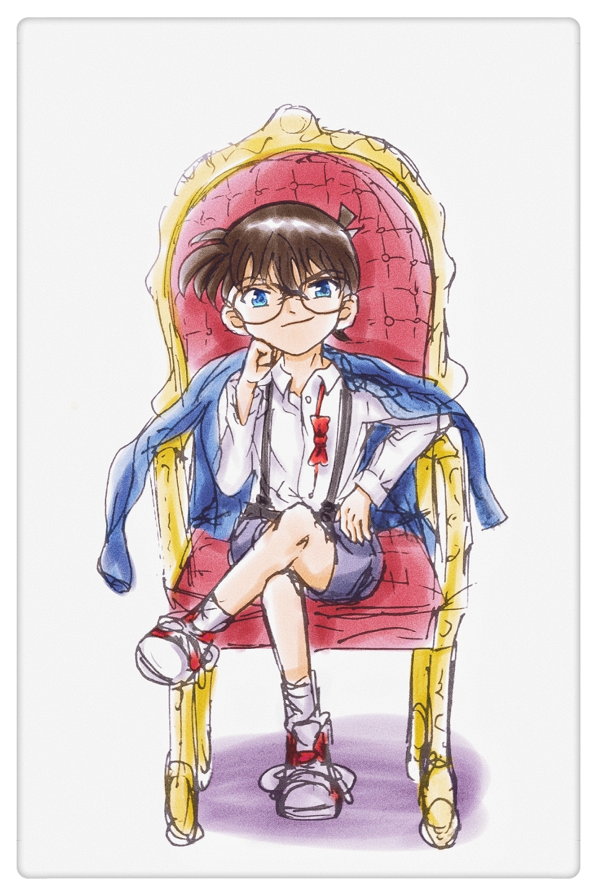

不会打架斗法,不会琴棋书画,只会洗衣做饭带娃的屑
十月叶 ~ Leaf Oct
我的圈子: 深大东方圈. 里面有ACM的大佬锅钢,米缸, 有L3-1003信安会长夏男人, 有大文豪烟斗, 有日语协会会长苍山 (大佬云集)
爱好: 诗词, 钢琴, 东方, 柯南, 特摄
偶像: 啊???肖战、丁真???
工作: 程序员 业余作曲家 柯学家 名蒸蛋?
作品：专辑《记忆飘零》,《Along Envolops》,《2020的春夏秋冬》。软件《最近点对可视化》《五排序》《垃圾分类》。游戏《东方幽紫诗》
友情链接